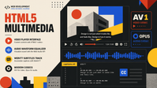

1. Текстові об’єкти
Основа змістового наповнення та індексації пошуковими системами: заголовки, статті, підписи та текстові доріжки субтитрів.
Сучасний веб-сайт — це синтез тексту, графіки, живого звуку та відеопотоків високої чіткості. Дізнайтеся, як браузер розпізнає медіафайли через MIME-типи, чим медіаконтейнер відрізняється від кодека, чому браузери блокують гучний autoplay і як створити адаптивну відеогалерею без сторонніх плагінів.

✨ Ілюстрація: Canva AI Studio<embed>) повністю вимкнено
<video autoplay muted loop> порівняно зі старим анімованим GIF
Термін походить від латинських слів multum («багато») та media («носій, середовище») — це одночасне використання різних форм подання інформації в єдиному цифровому інтерфейсі.
Мультимедіа на веб-сторінці — це поєднання різних типів даних в одному інтерфейсі: тексту, статичної графіки (зображень), анімації, звуку (аудіо) та відео, а також засобів інтерактивної взаємодії з ними.
Основа змістового наповнення та індексації пошуковими системами: заголовки, статті, підписи та текстові доріжки субтитрів.
Фотографії, ілюстрації, піктограми інтерфейсу та кадри-заставки (poster) для відеоплеєрів.
Записи голосу (подкасти, аудіогіди), музичний супровід та звукові ефекти інтерфейсу без візуального відеоряду.
Навчальні лекції, презентації продуктів, репортажі та високочіткі фонові відеопотоки зі синхронізованим звуком.
Динамічний рух елементів: CSS-переходи, SVG-анімації, інтерактивні сцени на <canvas> / WebGL та сінемаграфи.
Головна проблема минулого (до HTML5): До 2014 року браузери самі по собі вміли показувати лише текст і прості картинки. Щоб увімкнути музику або відео на сайті, користувачу доводилося встановлювати сторонні програми-плагіни — найчастіше Adobe Flash Player (або QuickTime, Silverlight).
Як це працює зараз: Сучасні браузери (Chrome, Safari, Firefox, Edge) мають вбудований «рушій» для відтворення звуку й відео прямо з коробки — без жодних сторонніх програм.
<video> або <audio>, і браузер сам намалює плеєр, кнопки «Play/Pause», регулятор гучності та шкалу часу.
Розширення файлу (наприклад, .mp4) — це лише підказка для людини. Браузер орієнтується на заголовок MIME-типу, який надсилає веб-сервер або вказує розробник в атрибуті type="...".
Контейнер — це «цифрова коробка», яка об’єднує в одному файлі кілька доріжок: стиснене відео, одну або декілька аудіодоріжок (різними мовами), субтитри та метадані (тривалість, авторство, обкладинку).
Наприклад, контейнер .webm створено спеціально для відкритого вебу (Google), а .mp4 (MPEG-4 Part 14) є універсальним стандартом для всіх мобільних і настільних ОС.
Кодек (від англ. Coder/Decoder) — це математичний алгоритм, який стискає «сирий» відео- чи аудіопотік у десятки разів під час збереження та розпаковує його на екрані глядача.
Незжата хвилина FullHD-відео важила б ~3,5 ГБ! Сучасні веб-кодеки VP9 та AV1 зменшують цей обсяг до 5–12 МБ без помітної втрати чіткості.
Уявіть відеофайл як картонну посилку з наліпкою .mp4 або .webm. Усередині лежать окремі доріжки, кожна з яких «стиснута» своїм кодеком (як вакуумний пакет для одягу):
1) Читає type="video/webm".
2) Відкриває коробку-контейнер.
3) Розпаковує відео, звук і субтитри та синхронно показує на екрані!
| Формат / Розширення | Офіційний MIME-тип | Типові кодеки всередині | Підтримка браузерами | Інженерний вердикт |
|---|---|---|---|---|
WebM Video (.webm) |
video/webm |
Відео: VP9, AV1 · Звук: Opus, Vorbis | Chrome, Firefox, Edge, Safari 16+ | №1 Основне джерело (найменша вага) |
MPEG-4 (.mp4) |
video/mp4 |
Відео: H.264 (AVC), HEVC · Звук: AAC | 100% усіх пристроїв і старих iOS | Обов’язковий fallback (резерв) |
Ogg Video (.ogv / .ogg) |
video/ogg |
Відео: Theora · Звук: Vorbis | Firefox, Chrome, Opera (без Safari) | Вільний формат (поступається WebM) |
Ogg / Opus Audio (.ogg / .opus) |
audio/ogg |
Звук: Opus, Vorbis | Chrome, Firefox, Edge, Safari 15+ | Найкраща якість голосу й музики |
MP3 Audio (.mp3) |
audio/mpeg |
Звук: MPEG-1 Audio Layer III | 100% усіх браузерів та ОС | Універсальний аудіо-стандарт |
AVI Контейнер (.avi) |
video/x-msvideo |
DivX, XviD або нестиснене відео | ❌ Не підтримується нативно в HTML5 | Заборонено для веб-сторінок! |
У старих версіях HTML4 для вставки відео використовували тег <embed> або <object>, які викликали зовнішній плагін Adobe Flash Player, а відео часто зберігали у форматі .avi.
Сучасний стандарт HTML5: підтримку Flash остаточно вимкнено в усіх браузерах з міркувань безпеки та енергоефективності, а файли .avi браузери не відтворюють. Сьогодні використовуються виключно семантичні теги <video> та <audio> з каскадом джерел <source> у форматах WebM та MP4.
Обидва теги є парними контейнерами. Між їхніми відкривальним і закривальним тегами розміщують альтернативні джерела <source>, доріжки субтитрів <track> та резервний текст для дуже старих програм.
Додає стандартну панель керування браузера: кнопки пуску/паузи, смугу прокрутки часу, регулятор гучності та перемикач повноекранного режиму. Без нього користувач не зможе запустити чи зупинити медіафайл.
<video src="video/lesson.mp4" controls width="640" height="360"></video>
Коли всередині <video> або <audio> вказано кілька тегів <source>, браузер читає їх згори донизу. Він перевіряє атрибут type="video/webm": якщо цей формат підтримується, браузер завантажує лише перший файл і ігнорує всі наступні <source>! Тому першим завжди ставлять найсучасніший і найлегший формат (WebM для відео, Ogg/Opus для аудіо), а другим — універсальний резерв (MP4 або MP3).
<video controls poster="img/cover.webp" preload="metadata">
<source src="video/movie.webm" type="video/webm">
<source src="video/movie.mp4" type="video/mp4">
Ваш браузер не підтримує HTML5 відео.
</video>controls), ставимо заставку (poster) та економимо трафік (preload="metadata")..webm..mp4, якщо браузер не підтримав WebM.<audio controls preload="metadata">
<source src="audio/melody.ogg" type="audio/ogg">
<source src="audio/melody.mp3" type="audio/mpeg">
Ваш браузер не підтримує HTML5 аудіо.
</audio><audio controls>:
4 ноти (C-E-G-C)
Натисніть ▶ вище — це справжній вбудований плеєр вашого браузера, створений одним тегом <audio controls>!
Якщо відео дуже велике (наприклад, 200 МБ), його краще не зберігати у папці сайту, а завантажити на YouTube і вбудувати через тег <iframe> (кнопка Поділитися → Вбудувати). Щоб відео красиво масштабувалося на телефонах, додайте у CSS width: 100%; aspect-ratio: 16 / 9;:
<iframe
src="https://www.youtube.com/embed/dQw4w9WgXcQ"
title="Навчальне відео з проєкту"
style="width: 100%; aspect-ratio: 16 / 9; border: 0; border-radius: 8px;"
loading="lazy"
allowfullscreen>
</iframe>
Протестуйте поведінку атрибутів HTML5 плеєра та політику автозапуску браузерів, виконайте Практичну роботу №9 з верстки багатоколонкової відеогалереї (.multimedia) і зберіть власний семантичний медіа-код.
controls, заощаджуючи трафік.
Спробуйте увімкнути autoplay без muted і подивіться, як зреагує система безпеки браузера:
Розмістіть на сторінці контейнер <div class="multimedia"> із кількома блоками <div class="multimedia-video"> у ряд. Порівняйте класичний метод верстки з підручника (width: 33.33%; float: left; box-sizing: border-box;) із сучасним стандартом CSS Grid.
style.css:
Якщо ви опрацьовуєте урок самостійно вдома — виконайте 4 прості кроки у власному редакторі коду (VS Code, Sublime Text або Notepad++) і відмітьте кожен пункт у чек-лісті нижче.
У папці вашого сайту (site/) створіть окрему підпапку video і покладіть туди короткий ролик movie.mp4 (бажано до 10 МБ). Для звуку створіть підпапку audio з файлом track.mp3.
У файлі gallery.html перед футером створіть контейнер <div class="multimedia"> і вкладіть всередину 3 блоки <div class="multimedia-video"> із тегом <video controls> та <source>.
Скопіюйте CSS-код із вкладки «2. Відеогалерея» вище (можна використати сучасний display: grid; grid-template-columns: repeat(3, 1fr); або класичний float: left; width: 33.33%; з підручника).
Спробуйте змінити кількість відео в рядку спочатку на 2 (width: 50% або repeat(2, 1fr)), а потім на 4 (width: 25% або repeat(4, 1fr)). Під галереєю додайте один аудіоплеєр <audio controls>.
<section class="multimedia">
<div class="multimedia-video">
<video controls preload="metadata" poster="img/preview-1.jpg">
<source src="video/movie.webm" type="video/webm">
<source src="video/movie.mp4" type="video/mp4">
Ваш браузер не підтримує HTML5 відео.
</video>
</div>
<div class="multimedia-video">
<video controls preload="metadata" poster="img/preview-2.jpg">
<source src="video/movie.mp4" type="video/mp4">
</video>
</div>
<div class="multimedia-video">
<video controls preload="metadata" poster="img/preview-3.jpg">
<source src="video/movie.mp4" type="video/mp4">
</video>
</div>
</section>Відмітьте пункти, які ви вже перевірили у своєму браузері:
site/, а відео в site/video/, шлях має бути src="video/movie.mp4" (без початкового слеша / і без C:\Users\...).controls: Без нього відео виглядає як нерухома картинка, і натиснути Play неможливо..avi або .wmv: Браузери їх не розуміють. Переконвертуйте файл у MP4 (H.264) або WebM (наприклад, через CloudConvert або HandBrake).autoplay без muted, браузер заблокував його автоматично. Додайте muted playsinline.